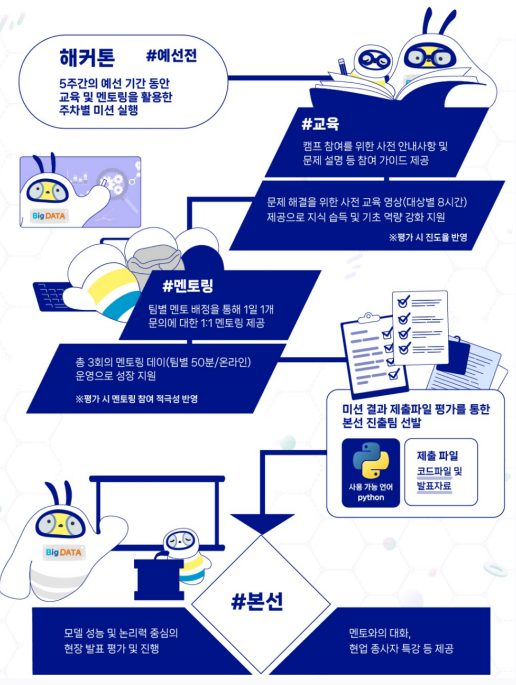
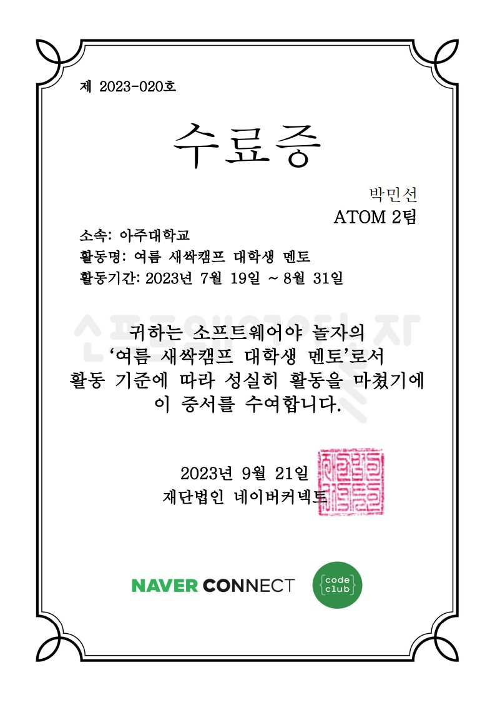
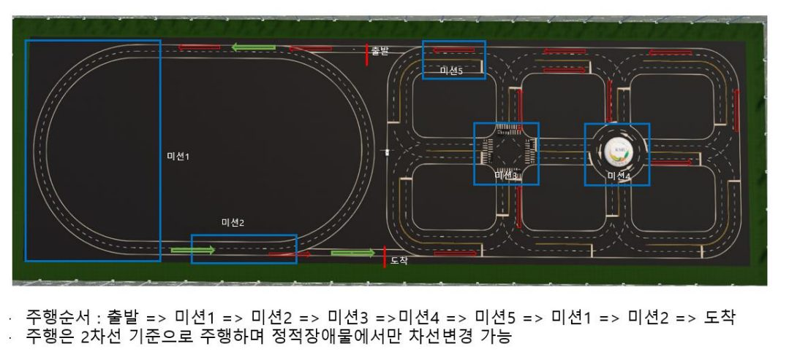
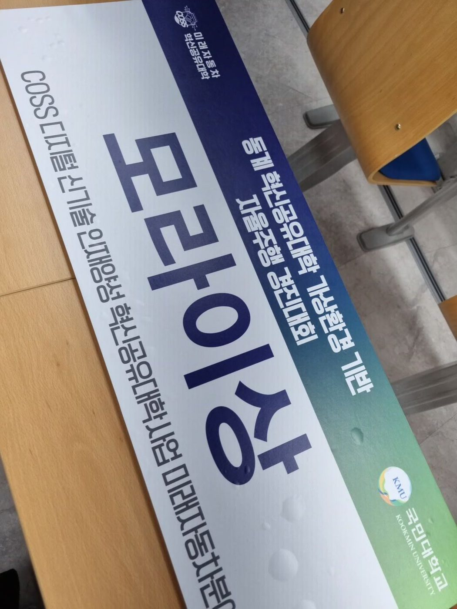
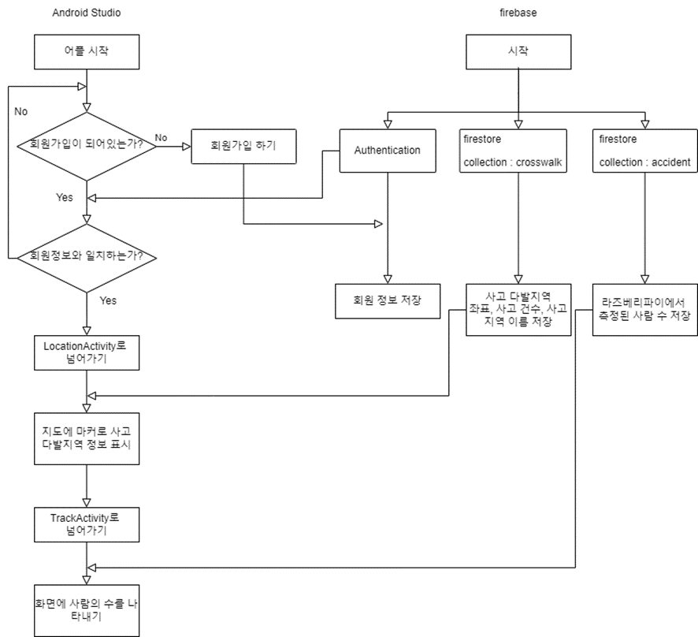

2025.03 — Present
M.S. Researcher · Media System Lab, SKKU
Source-Free 및 Test-Time Adaptation을 중심으로 동적 환경에서의 모델 강건성을 연구합니다. 성균관대학교–삼성서울병원 공동 프로젝트에 참여하고 있습니다.
RESEARCH IN
안녕하세요,
변화하는 실제 환경에서도 신뢰할 수 있는 컴퓨터 비전 시스템을 연구합니다.
성균관대학교 전자전기컴퓨터공학과 석사과정에서 Test-Time Adaptation과 Source-Free Domain Adaptation을 중심으로 모델 강건성을 연구하고 있습니다. 학습 데이터에 다시 접근하기 어려운 상황에서도 모델이 새로운 환경에 적응하는 방법에 관심이 있습니다.
RESEARCH OUTPUT
ACCV 2026 · Under Review
시각 손상과 텍스트 손상이 동시에 발생하는 환경에서 MAC-TTA를 제안하고, 정확도를 40.90%에서 58.68%로 회복했습니다.
VLMTest-Time AdaptationIEEE ICASSP 2026 · pp. 3036–3040
CLIP 기반 하이브리드 증류와 조건부 앙상블을 통해 Waterbirds-shift 정확도를 32.38%에서 76.61%로 향상했습니다.
[Paper] Concept BottleneckIEEE ICCE-Asia 2025 · pp. 476–480
양방향 특징 스캔과 학습 가능한 게이트를 적용하여 CIFAR10-C Gaussian noise 정확도를 74.64%에서 79.90%로 개선했습니다.
[Paper] Corruption RobustnessIEEE ITC-CSCC 2025 · pp. 1205–1208
ConvGRU 병목을 Mamba로 교체해 KITTI의 오차를 낮추면서 파라미터 32.65%, FLOPs 22.88%를 절감했습니다.
[Paper] Optical Flow한국컴퓨터종합학술대회 KCC 2024 · pp. 2245–2247
실제 결절을 분할·합성한 740장의 학습 데이터를 구축하여 YOLOv8 검출 민감도를 86.47%에서 92.01%로 높였습니다.
Medical AISAMRESEARCH & PROJECTS
Source-Free 및 Test-Time Adaptation을 중심으로 동적 환경에서의 모델 강건성을 연구합니다. 성균관대학교–삼성서울병원 공동 프로젝트에 참여하고 있습니다.
ITRC 연구 과제에서 흉부 X-ray 기반 폐 결절 검출과 의료 영상 데이터 증강을 연구했습니다.
RECOGNITION
UNIVERSITY ACTIVITIES
주요 활동을 최신순으로 정리했습니다. 카드를 누르면 활동 내용과 역할을 볼 수 있습니다.
GET IN TOUCH
2026.08.31 · 과학기술정보통신부 · 한국장학재단 · 석사우수장학금(이공계) 선발
과학기술정보통신부와 한국장학재단이 연구 역량이 우수한 이공계 석사과정생을 지원하는 국가우수장학금 장학생으로 선발되었습니다. 학업 및 연구 계획, 연구 활동 실적, 성적, 사회공헌 계획을 종합 평가해 대학원 추천과 재단 심사를 거쳐 선발됩니다.
연구의 독창성과 실현 가능성을 인정받아 선발되었고, 실제 환경에서 신뢰할 수 있는 AI를 만든다는 연구 목표를 더욱 구체화하는 계기가 되었습니다.
2024.12.13 · 아주대학교 전자공학과 · 대상
2024학년도 아주대학교 전자공학과 산학박람회에서 폐 결절 검출을 위한 데이터 증강 연구를 발표해 대상을 수상했습니다.
의료 이미지는 개인정보 문제와 전문의 라벨링 비용 때문에 대규모로 확보하기 어렵습니다. 생성 모델로 병변을 만들어 내는 기존 증강 방식은 실재하지 않는 소견을 만들 위험이 있어 이 연구를 시작했습니다.
실제 환자 이미지에서 결절만 분할해 정상 이미지에 합성하는 방식을 제안했습니다. 분할 모델 SAM을 X-ray에 맞게 미세 조정하고, 정상 이미지의 폐 영역을 추출한 뒤 가우시안 블러링으로 경계를 자연스럽게 처리해 학습 데이터를 증강했습니다. 이를 사전 학습에 활용한 검출 모델은 원본만 사용했을 때보다 민감도가 86.47%에서 92.01%로 향상되었습니다.
문제 정의부터 결과 검증까지의 과정을 비전공 청중도 이해할 수 있도록 구성해 발표했고, 그 설득력을 인정받아 대상을 받았습니다. 이 연구는 KCC 2024 논문으로도 발표했습니다.
2023.02.13 · 국민대학교 미래자동차사업단 · 팀 아주부릉부릉 (5명) · 모라이상
2022학년도 동계 혁신융합대학 가상환경 기반 자율주행 경진대회에서 모라이상을 수상했습니다. Linux와 ROS 환경에서 시뮬레이터 기반 자율주행 미션을 수행하는 대회로, 팀에서 카메라 기반 차선 인식, 경로 매핑, 장애물 인지 미션을 담당했습니다.
개별 모듈 구현은 순조로웠지만 전체 시스템 통합 단계에서 제가 맡은 동적 장애물 인식 로직이 다른 팀원이 개발한 로터리 구간의 앞차 간격 유지 로직과 충돌했습니다. 팀원들과 시뮬레이션 로그를 함께 분석해 원인을 추적했고, 카메라 중앙 영역 밖에서 차량이 아닌 물체가 감지되면 차량을 멈추도록 로직과 임곗값을 조정해 해결했습니다. 이후에도 미션별 실패 사례를 하나씩 개선해 최종적으로 모든 미션을 완수했습니다.
개별 모듈이 정상 동작해도 통합 단계에서 예상치 못한 문제가 생길 수 있고, 이를 풀려면 구성원 간 꾸준한 소통과 함께 분석하는 자세가 필요하다는 점을 배웠습니다.
2023.09.25 — 2023.11.15 · 소학회 네트로닉스 · 4인 팀
K-ICT 빅데이터센터가 주관하는 고등부·대학생 대상 멘토링 해커톤으로, 교육과 멘토링을 중심으로 데이터 분석 인재를 육성·선발하는 프로그램입니다.


Mission 1. 메뉴별 분류 데이터셋과 데이터로더를 준비하고, ResNet18로 42종 클래스 분류를 수행해 검증 정확도를 제시했습니다. 데이터를 폴더 단위로 관리해 datasets.ImageFolder로 간단히 불러오도록 구성했고, Mission 1의 코드를 전부 작성했습니다.
Mission 2. Confusion matrix로 맞춘 샘플과 틀린 샘플의 특징을 분석하고, 이를 바탕으로 아키텍처(ResNet18/34/50), LR scheduling, augmentation, regularization 등을 비교했습니다. 이 중 결과 분석과 Albumentations 기반 증강을 담당했습니다.
2023.07.19 — 2023.08.31 (수업 08.16 — 08.17) · 네이버 커넥트재단 · 아주대학교 중앙동아리 ATOM 2팀 · 4인 팀
AI는 앞으로 다양한 직업 분야에서 필요한 핵심 기술입니다. 교육을 통해 AI에 대한 이해와 관련 직업에 대한 흥미를 키우고, 문제 해결 능력과 창의적 사고가 자라도록 돕고 싶었습니다. 팀원 모두 스크래치·엔트리 같은 시각적 프로그래밍 도구 경험이 있어 초등학생에게 AI 개념을 쉽고 재미있게 전달할 수 있다고 생각했습니다.
초등학교 1–2학년을 위한 인공지능 수업 시연을 진행했습니다. 저학년이 쉽게 이해할 수 있도록 단어 선택에 신경 쓰고, 45분 수업을 개념 설명(10분) – 학습 활동(30분) – 요약 정리(5분)로 구성했습니다.
초등학교 저학년 10명을 대상으로 이틀에 걸쳐 하루 4교시씩, 총 8차시 수업을 진행했습니다. 아직 코딩 활동이 어려운 학생들을 위해 컴퓨터 없이 놀이 중심으로 컴퓨터 과학을 이해하는 언플러그드 활동으로 수업을 설계했습니다.
AI가 무엇인지 설명하는 것과 함께, AI의 편향성과 악용 가능성도 다루어 학생들에게 경각심을 일깨웠습니다.
저학년 아이들이 수업을 따라오도록 지도하는 데 어려움이 많았지만, 설문조사에서 수업이 매우 만족스러웠다는 답을 보며 보람을 느꼈습니다. 마지막 날 겨울방학에도 또 와야 한다며 우는 아이도 있어 뭉클했습니다. 다음에도 이런 교육봉사 기회가 있다면 기꺼이 참여하고 싶습니다.

2023.01.02 — 2023.02.13 · 소학회 네트로닉스 · 5인 팀 · 모라이상 수상

Linux와 ROS(Robot Operating System) 환경에서 MORAI 시뮬레이터 속 자율주행 차량으로 미션을 수행하는 대회입니다. 기본 주행, 무작위로 바뀌는 신호등 대응, 동적·정적 장애물 회피, 충돌 없는 로터리 통과, 라바콘 회피 등의 미션이 있었습니다.
차량 전면 카메라 영상은 원근 때문에 차선이 휘어져 보이므로, perspective warping 후 HSV 색 범위로 노란색·흰색 차선만 마스킹했습니다. 이후 sliding window 방식으로 차선 픽셀을 찾아 2차 다항식으로 피팅하고, 곡률로부터 조향각을 계산해 ROS 토픽으로 publish했습니다.
시뮬레이터가 publish하는 /GetTrafficLightStatus 토픽을 구독해 신호등 상태를 읽고, 상태에 따라 차량 운행을 제어했습니다.
맵 이미지에서 클릭한 점을 시뮬레이터 좌표로 변환하고, SciPy의 splprep로 점 사이를 보간하는 도구를 만들었습니다. 3차(cubic) spline보다 매끄럽게 연결하기 위해 k=4로 설정했고, 주행 중에는 현재 위치 (x, y)에서 가장 가까운 경로점으로 이동하도록 했습니다.

2022.07.07 — 2022.09.25 · 아주대학교 전자공학과 · 4인 팀
라즈베리파이 기반으로 자동차와 사람 등 다른 객체를 인식하고, 사고가 나면 해당 장면을 포착해 데이터베이스에 보고하는 작품입니다. YOLOv5로 객체를 인식하고 객체 간 거리를 계산해 사고 여부를 판단합니다. 또한 앱 사용자에게 가까운 교차로의 보행자 수를 보여 주어 회전 시 사고를 미리 방지하도록 했습니다.

앱은 로그인, 회원가입, 지도, 감지 액티비티로 구성했습니다. 로그인과 회원가입은 Firebase Authentication을, 지도와 감지 화면은 Cloud Firestore의 데이터를 사용합니다.
2022.03.18 — 2022.06.01 · 아주대학교 소학회 네트로닉스 시스템부 · 32명 참여
신입생들이 프로그래밍 언어를 혼자 학습하기 어려울 것이라 생각해 C언어 세미나를 열었습니다. 매주 한 번 대면 수업을 진행하고 질문을 받으며 신입생들의 학업 역량 향상을 도왔습니다.
C언어 강의. 매주 월요일 1시간가량 해당 주차 수업을 진행하고, 적극적인 소통을 위해 3–4개의 실습을 병행했습니다.
학습 활동지 제작. 학생들이 어려워한 부분을 파악해 학습 활동지를 만들고, 제출된 테스트지는 채점과 피드백을 달아 다음 시간에 돌려주었습니다.